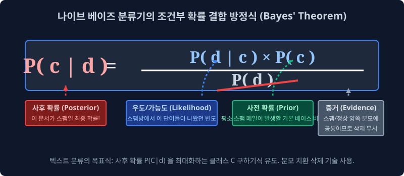
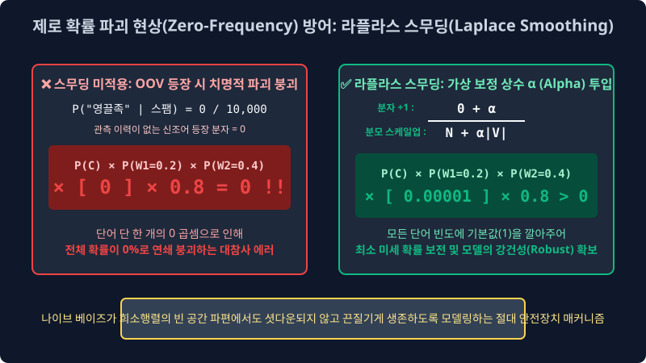

6.2 조건부 독립의 기적: 나이브 베이즈 분류기 (Naive Bayes Classifier)
수십 개의 레이어가 교차하는 방대한 파라미터의 딥러닝 텐서 우주가 도래하기 훨씬 전, 데이터 학계를 지배하며 텍스트 분류기의 헤게모니를 선점했던 전설적인 고전 통계 확률 알고리즘입니다. 그 수학적 이론과 파이썬 인퍼런스 코드는 단 몇 줄이면 완성되어 선형 연산 속도가 타의 추종을 불허할 만큼 가볍지만, 실제 스팸/정상 메일 분류와 같은 이진 클래스(Binary Class) 도메인 현장에서는 웬만한 거대 신경망 모델의 실전 명중률을 능가할 정도로 강력한 퍼포먼스를 뽐내는 자연어 텍스트 분류기의 위대한 조상 나이브 베이즈(Naive Bayes) 의 파이프라인 특징과 모순된 확률 최적화 수식을 배웁니다.
6.2.1 모든 것의 수학적 근원: 베이즈의 정리 (Bayes’ Theorem)
이 분류기의 뼈대는 18세기의 통계 수학자 토마스 베이즈 목사가 창안한 전설의 조건부 결합 확률 방정식에 그 논리적 뿌리를 두고 있습니다. 베이즈 정리는 “우리가 어떤 목표 타겟(클래스 분류 정답) 사건의 확률을 당장 모를 때, ‘그 타겟 집단이 전체 도메인에서 평소에 가졌던 기본 밀도 통계(사전 확률)’와 ‘방금 인퍼런스 입력 포트로 유입된 새로운 단서 데이터들의 확률 패턴(우도)’ 모수를 융합하여 $\to$ 최종적으로 이 현상이 속할 정답 집단이 무엇일지에 대한 사후 확률(Posterior) 파라미터를 역산 편미분 추적하는 도구식” 입니다.

🚨 텍스트 클래스 분류를 위한 베이즈 매핑 공식
수천 개의 텍스트 배열 텐서(단어 집합 형태소 증거 $d$)가 문서 시스템으로 쏟아져 들어왔을 때, 컴퓨터 머신러닝 모듈이 이 전체 문서를 특정 타겟 목적 범주인 스팸 폴더 카테고리($c$) 로 레이블링 선언해 버릴 최종 수식은 아래와 같습니다.
\[P(c|d) = \frac{P(d|c) \times P(c)}{P(d)}\]- $P(c)$ [Prior 사전 확률]: 특정 입력이 주입되지 않은 상황에서 내 데이터베이스에 유입된 전체 과거 메일 풀(Pool) 중, 특정 클래스인 ‘스팸 메일 집합’ 자체가 차지하고 있던 고유 비율 통계 파라미터 (예: 내 계정에는 평소 수신 메일의 40%가 애초에 스팸이더라 하는 선험적 베이스라인 편향치).
-
$P(d c)$ [Likelihood 우도/가능도]: 타겟 $c$(스팸 메일)라고 이미 과거 정답 레이블($Y$) 판정이 확정된 통계의 집합 구역 안에서, 하필 방금 실시간 인퍼런스로 들어온 대출이라는 단어 데이터 스펠링($d$)이 과거 누적 빈도상 얼마나 많이 점유하여 관측되어 왔는가에 대한 조건부 확률 스펙(조건부 증거력 스탯). - $P(d)$ [Evidence 입력 증거]: 우주 확률 분포 전체에서 이 $d$라는 단어가 나타날 절대 확률 모수 상수 분모. 하지만 머신러닝 분류기 시스템이 클래스
긍정타겟의 점수 산출량과 클래스스팸방 타겟의 스코어를 비교 논리 연산할 때, 양쪽 확률 방정식에서 똑같이 이 고정 상수 $P(d)$ 수치로 나누기를 치르게 되므로 분모는 대소 결정 판별기 기준에서 상수 소거법으로 판단하여 생략 정규화(무시) 처리해도 최종 결과 레이블 분할에 아무런 오차 지장이 유발되지 않습니다! 연산 속도를 가속하는 핵심적인 트릭입니다.
6.2.2 극단적인 강제 가정 (Why “Naive”?)
이 멋진 베이즈 공식을 문장 코퍼스 집합(“I love this wonderful movie”) 전체의 맥락에 그대로 대입하여 조건부 모델링을 돌리려다 보면 지수적인 대참사가 일어납니다. “단어 토큰들이 위치마다 연쇄적으로 연달아 발생할 연결 확률 결합 수열 공식의 분수 다항 곱셈”이 수십만 단위 변수로 폭주하면서 메모리의 차원 저주를 일으킵니다. 그래서 공학자 모델러들은 차원 한계를 돌파하기 위해 모델 이름에 대놓고 ‘Naive(너무 단순하고 순진한/억지스러운)’ 이라는 타이틀을 붙이며 다음과 같은 통계학적 상식을 파괴하는 극단적인 억지 독립성 가정을 모델 파이프라인에 이식하여 컴퓨터 뇌 구조를 재단합니다.
- 위치와 어차(어순) 모수 스펙 무시 (Bag-of-Words 기반 정보 소실): 단어 모델이 텍스트 맨 앞에서 튀어나오든, 꼬리 술어에서 튀어나오든 뉘앙스와 거리의 텐서 차이를 100% 삭제해 무시합니다. 다중 집합 내에서 “맛있는 사과” 구조든 “사과 맛있는” 역순이든 나이브 베이즈 연산 시점에서는 그저
맛있는성분 모수 1개,사과빈도 변수 1개가 순서 없이 뽑힌 이산 카운트 깡통 유니버스 덤프 취급입니다. - 모든 속성의 철저한 상호 파편화 (조건부 독립 사건 추정의 한계): 텍스트 문장에 출현한 단어들은 시맨틱 문맥 배열상 당연히 긴밀히 붙어 상관관계 스코어를 가져야 합니다. 하지만 나이브 모델 연산망은 이렇게 알고리즘을 선언합니다. “내 시스템은
good이라는 단어 피처와movie라는 단어 피처가 서로 시너지를 발생시키며 연계 출현 확률을 지닌다는 팩트를 절대 신경 쓰지 않겠다! 그냥 다변수 공간에서 독립된 주사위들을 수백 개 던졌는데 이 토큰들이 전부 완전히 개별적이고 독립적인 우연의 일치 발생 스탯으로 튀어나온 것이라고 통계적 가정을 결속시킨다! (Naïve Conditional Independence 확률 독립 강제)”
[!TIP]
😲 나이브 모델의 확률적 억지 파괴 논리가 왜 실전 분류기에서 무지막지하게 효율적일까?
조건부 다항 분포의 앞뒤 종속 문맥 확률 구조를 억지로 포기하고 모든 변수를 파편 독립 사건 연산망 곱셈으로 쪼개어 단순화시킨 덕분에, 행렬의 복잡 기하 파라미터가 소거되어 전체 파이프라인의 모델 학습 및 결정 판별 연산 처리 속도가 웬만한 딥러닝 망을 수천 배 이상 앞지르며 가속 전개됩니다!
게다가 이렇게 주사위 빈도 확률 곱셈처럼 아주 단순 무식하게 분할된 이산 카운트 특성으로 구조를 바꾼 덕분에, 레이블된 학습 도메인 데이터 세트 볼륨 수량이 턱없이 적거나 고르지 못할 때, 딥러닝이 종종 빠지는 함정인 특정 노이즈 오타나 희소 패턴 1개를 문맥 결합 패턴으로 통째 맹신하여 과적합(Overfitting 아웃라이어 파손) 해 버리는 네트워크 오류에 쉽게 빠지지 않습니다. 그래서 스팸 필터나 이상 분류 방어막 전쟁 현장에서는 오히려 이 나이브 베이즈 모듈의 ‘멍청할 정도로 억지스럽게 둔감한 파편화 수학 결합’ 기조가 막강한 노이즈 저항력과 일반성(Generalization)의 실전 명중 쾌거를 가져왔습니다.
6.2.3 최우도 추정 모수법 (MLE) 과 라플라스 스무딩 방어막 (Laplace Smoothing)
나이브 베이즈 모델이 최초로 과거 라벨 데이터 집합 체계로부터 각 토큰의 가중 확률 스코어 파라미터 장부를 추정 산출할 때는 대단히 직관적이고 거친 단순 나눗셈 카운팅 모델인 최우도 추정 모수법 (Maximum Likelihood Estimation, MLE) 을 가동합니다.
\[P(w_k | c) = \frac{N(w_k, c)}{N(c)}\]원리 해석: 스팸 카테고리($c$) 타겟 클래스의 레이블링된 구역 안에 존재하는 전체 유입 단어 덩어리 토큰들의 총합 횟수가 1,000만 개($N(c)$) 만큼 널브러져 있는데, 이 통계 덤프 속에서
비아그라($w_k$)라는 피처 특성 토큰이 카운트 탐지된 빈도 누적이 무려 5,000번 수준이었다? $\to$ 아하! 그렇다면 주어진 모델 유니버스 내에서 조건부 스팸 환경일 때 저 은닉 단어가 방출할 치명적 우도 스코어(살상 확률)는 직관적 등식 $\frac{5,000}{10,000,000}$ 근사치 비율로 스케일 매핑 수렴되는구나!
🚨 멸망의 에러 한계 파이프라인: 제로 빈도 수렴 파괴(Zero-Frequency)의 저주
만약 시스템 런타임에 서비스에 배포된 오늘 아침, 갑자기 갓 탄생한 신조어 텍스트 피처인 영끌족(W) 문자열 배열이 모델 서버의 인퍼런스를 거쳐 판별 요청을 보냈는데, 과거 모델 학습 엔진이 갈아 넣은 10년 치 학습 코퍼스 장부 안에 이 형태소가 단 일(1) 마이크로 카운트도 훈련된 적 없는 OOV 백지상태 텐서라면 시스템에서 대체 무슨 충돌이 벌어질까요?
- 과거 관측치 집계가 전혀 발생한 이력이 전무하므로 이 단어가 분기 발생시킬 수학적 분자 식(Numerator Model) 횟수는 온전히
0(Zero)스칼라값이 할당됩니다. - 앞서 정립했듯 나이브 베이즈는 문장에 흩뿌려진 개별 단어 변수 토큰 확률들을 모두 체인 룰(Chain Rule)처럼 이어서 몽땅 연속 곱셈 파이프라인 연산($\prod$)으로 누적 집계시키는 모델입니다.
- 이 거대한 곱셈 확률 트래픽 누적 연쇄 곱 체인 중간 배열에 숫자
0확률값이 단 하나라도 똑 떨어지면? 아무리 훌륭한 주변 정황 증거 우도 점수 확률들이 수만 개 연속 배열되어 있었더라도 모든 확률 밸류 스펙 값이 도미노로 연속 붕괴하여, 결국 클래스의 전체 확률(문장 스팸 판정 여부) 결론 값이 통째로0%영-수렴(Zero Out) 으로 파괴 폭파되어 버리는 치명적 수학 결함(Zero-frequency Problem) 한계에 직면합니다.
이 무지막지한 곱하기 방정식 모델 확률 마비 폭발을 매끄럽게 막아내기 위해, 전 세계의 수리 통계 모형 설계자들과 엔지니어들은 이 모델 엑셀 파라미터 표에 라플라스 스무딩 (Laplace Smoothing / Add-One Smoothing 상수 융화술) 이라는 인공호흡 생명 보험 상수 모델 연장 블록 장치를 우겨넣어 공식을 튜닝합니다.

\[P(w_k | c) = \frac{N(w_k, c) + {\color{red}\alpha}}{N(c) + {\color{red}\alpha |V|}}\]확률 계산식 모델에서 훈련 당시의 모든 단어 종류별 분자 발생 빈도 모수 숫자 꼬리표에 강제로 가짜 발견 횟수 보정 상수 파라미터 $+1 (\alpha=1)$ 을 인위적으로 더해줍니다. 이 스케일 튜닝을 통해, 모델 체계가 생전 처음 마주보는(학습 이력이 전무한) OOV 에러 단어 도메인 좌표조차도 최소한 분극 수치가 0 으로 수렴 타결되는 파국을 회피할 수 있게 되고 아주 희미한 베이스 찌꺼기 확률(0.00000001%) 라도 파라미터 스코어로 겨우 살아남아 토큰 방어력 텐서를 유지하게 설계함으로써, 전체 수식 연쇄 도미노의 곱셈 0 마비 확률 파괴 현상을 유려하고 단단하게(Robust Smoothing) 방어해 낼 수 있게 됩니다.
6.2.4 최종 예측 추론 평가(Predict) 로거 및 모델 가동
머신러닝 기계 런타임 시스템에게 이 모든 사전 훈련 방정식 파라미터를 탑재하고, 백엔드 배포 서버 모듈에서 미지의 변수 테스트 인퍼런스를 전개 가동합니다.
- 미션 판독: “방금 막 이메일 소켓에 들어온
“I love this fun film”이라는 이산형 벡터 배열 텍스트가 스팸 클래스 타겟에 속하는지 정상(긍정) 클래스 확률 분포에 수렴해 매핑되는지 분류 산출하라!”
나이브 베이즈 모델 내부 수학망 뇌 구조 안에서는 위의 복합적인 시그마($\sum$)와 프로덕트($\prod$ 연속 곱) 수리 행렬 스케일 방정식을 처리할 때, 사실 다음과 같은 대단히 단순하고 무식한 원초적인 배열 체인 룰 연속 곱셈 로직 룰렛 연산이 병렬로 치열하게 벌어집니다.
- 긍정 클래스(Positive) 룸 스코어 누적 산출기 구동: (초기 설정된 기본 긍정 메일이 들어올 사전 확률 모수 $60\%$) $\times$ (긍정 방에서
I토큰 피처를 뽑을 우도 조건부 확률) $\times$ (긍정 방 조건부love발생 확률) $\times$ (fun) $\times$ (film) 각 이산 스케일 값 배열을 몽땅 연속적으로 곱하기 등차 계산식 파이프라인으로 관통시킵니다!- $\to$ 누적 파라미터 결과 점수 스탯 도출: 극소 스케일
0.00000005(5e-8)
- $\to$ 누적 파라미터 결과 점수 스탯 도출: 극소 스케일
- 부정 클래스(Negative/Spam) 룸 확률 스코어 루프 가동: 부정방 알고리즘 포트에서도 똑같이 구축된 모수 과거 확률치 행렬을 추출해 동일 토큰열을 다 연속 곱해봅니다!
- $\to$ 누적 파라미터 결과 산출:
0.000000001(1e-9)
- $\to$ 누적 파라미터 결과 산출:
- 결정 경계 심판 엔진의 Argmax 최종 발동 산포: “조건부 확인 완료! 긍정 긍정성 풀(Pool)의 최종 로그 곱하기 룰렛 누적 점수 합산 가중치 결괏값이 부정 스팸 로직 포트 점수 규모보다 $\ge$ 스코어가 압도적으로 초과 지배하네? 그렇다면 argmax 판단법에 근거해 이 문서 벡터 배열 텐서를 무조건 긍정 카테고리(Positive) 인덱스 룸 분류로 확정 편향 시켜!!”
이토록 고전 클래식 통계학의 근간이자 극도로 직관적이고 경량화된 이산 파이프라인 독립 조건부 파라미터 곱하기 엑셀 방식 시스템 모델 하나로, 글로벌 수집형 텍스트 빅 자연어 데이터베이스들의 대문 진입 통제 및 방화벽 분류기 역할 라우팅 메커니즘이 수십 년간 고속으로 흔들림 없이 가동되어 구동되었습니다. 세계의 빅테크는 이제 이런 카운트 단순 엑셀 비교판 분류를 넘어서서, 인공지능이 두 개의 판넬 다층 구조 진영 가운데 은닉의 다차원 그루브 미적분 차원 벡터 초평면 면도칼로 거대한 결정 경계 지표 담장선을 곡면으로 정밀 설계하게끔 구동하는 심층 신경망 로지스틱 의사 결정 회귀 확률망(Logistic Regression)과 소프트 맥스(Softmax) 가중치 다중 분류망 로직의 방대한 학습 아키텍처 세계 차원으로 진격 및 진입하게 됩니다.